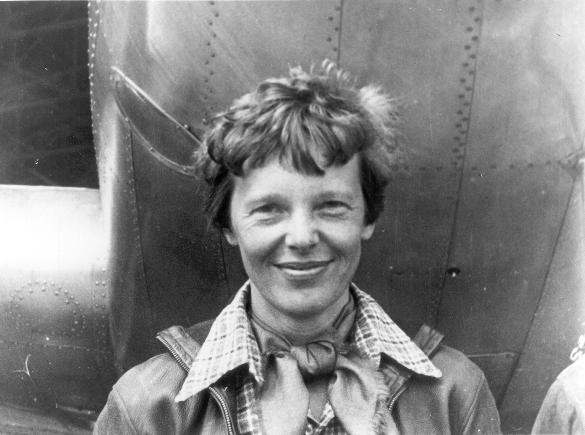
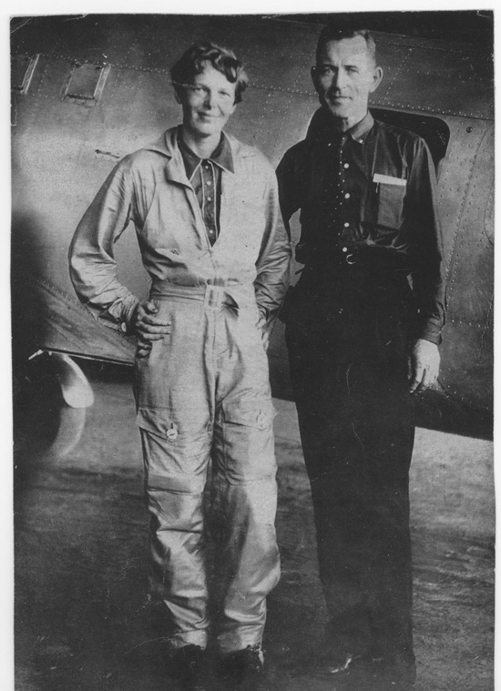
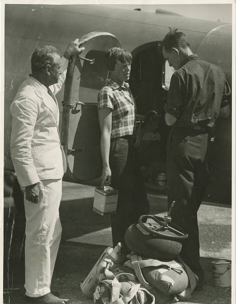
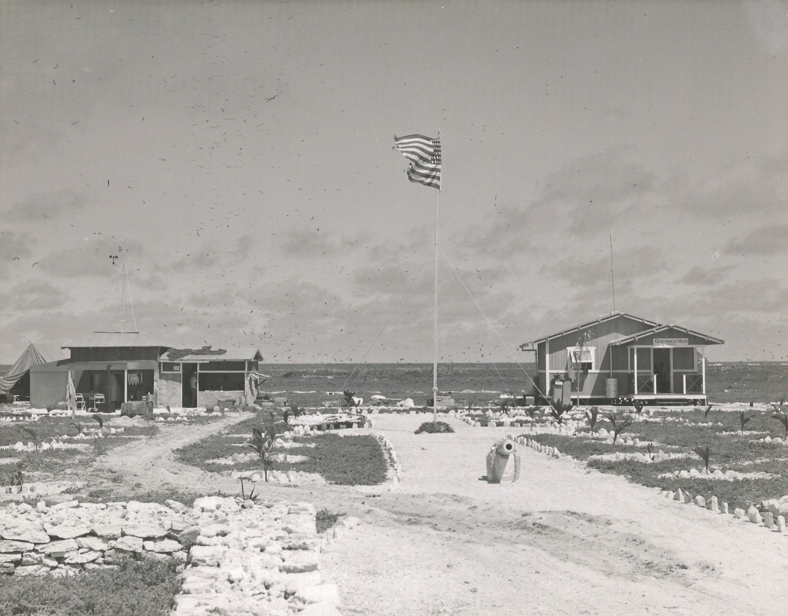
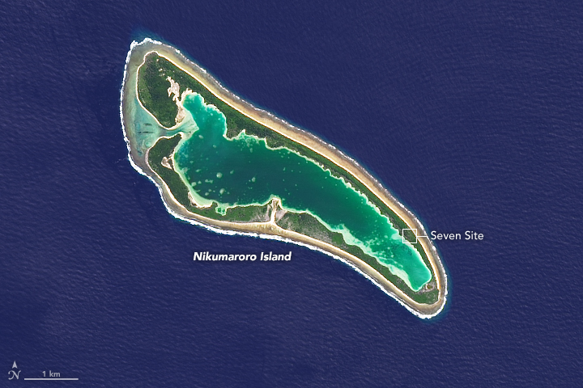

On July 2, 1937, Amelia Earhart and navigator Fred Noonan vanished over the central Pacific during the longest and most dangerous ocean crossing of an attempt to fly around the world near the equator, the most ambitious flight either of them had ever attempted. No wreckage has ever been conclusively identified. No remains have ever been positively confirmed. Eighty-nine years later, it remains the most famous unsolved disappearance in aviation history, and the search for an answer is still actively underway.
Nine years before she disappeared, Amelia Earhart was already one of the most famous women in the world, and she'd earned it by actually flying, not simply by being flown.

Amelia Mary Earhart was born July 24, 1897, in Atchison, Kansas, to a family that moved often while her father chased work as a railroad attorney. She took her first flying lesson in January 1921, at 24 years old, paying for it with money saved from a string of odd jobs, and bought her first airplane, a secondhand Kinner Airster she nicknamed “The Canary,” within six months of that lesson.
In 1928 she became the first woman to cross the Atlantic by air at all, as a passenger aboard the Fokker trimotor “Friendship,” flown by pilot Wilmer Stultz. She said afterward that she had been “just baggage” on that flight, and set out to do it herself.
She did, on May 20–21, 1932, becoming the first woman, and only the second person after Charles Lindbergh, to fly the Atlantic solo. She departed Newfoundland and landed roughly 15 hours later in a pasture near Culmore, Northern Ireland, after fighting ice on the wings and a cracked exhaust manifold for most of the crossing. She received the Distinguished Flying Cross for it, the first ever awarded to a woman.
By 1935, she had also become the first person to fly solo from Hawaii to the US mainland. She was a bestselling author, ran a women's clothing line, and was a founding member and first elected president of The Ninety-Nines, the international organization of licensed women pilots. That same year, she joined Purdue University as a visiting faculty member and career counselor for women, one of the first women to hold such a position at a major American university, a connection that would shape the flight that killed her.
July 24, 1897 – Declared Dead In Absentia, January 5, 1939
She flew it herself.
In 1937, at 39, Earhart set out to become the first person to circle the globe along its longest possible route, roughly 29,000 miles, tracking close to the equator rather than a shorter path nearer the poles.
Her aircraft, a Lockheed Electra 10E registered NR16020, had been purchased in part with funding from the Purdue Research Foundation. Earhart called it her “flying laboratory.” Her first attempt, departing Oakland for Honolulu on March 17, 1937 heading west, ended three days later at Luke Field, Hawaii, when the Electra ground-looped violently on takeoff, collapsing its landing gear and damaging both propellers. No one was hurt; the aircraft went back to Lockheed's Burbank plant for repairs.
The second attempt reversed direction entirely. Departing Oakland in May and officially resuming the circumnavigation from Miami on June 1, 1937, Earhart and Noonan flew east: through South America, across the South Atlantic to Africa, over the Middle East and South Asia, and on through Southeast Asia toward Australia and the Pacific.

Fred Noonan, 44, was one of the most experienced ocean navigators alive: a veteran of Pan American Airways' Pacific Clipper routes who had personally helped chart several of the air lanes across the Pacific that commercial aviation still uses today. Pan Am had let him go earlier that year, for reasons that remain disputed. Earhart requested him specifically for this flight, for exactly the skill this ocean crossing would demand most: celestial navigation, over water, with no landmarks at all.
By the time they reached Lae, New Guinea, on June 29, 1937, Earhart and Noonan had flown roughly 22,000 miles of the planned route. Only about 7,000 remained, but they were the emptiest, hardest-to-navigate miles of the entire flight: three Pacific ocean crossings, starting with the shortest runway and the smallest possible target either of them had ever attempted to find from the air.
Howland Island is 1.7 square miles of sand and scrub, barely above sea level, roughly 2,556 miles from Lae. It was, by a wide margin, the hardest target on the entire route to find.
Earhart and Noonan departed Lae at 10:00 a.m. local time on July 1, 1937, carrying roughly 1,100 gallons of fuel for a flight expected to take between 18 and 20 hours. The US Coast Guard cutter Itasca was stationed off Howland specifically to serve as a radio contact and, in daylight, a visual and smoke marker for the island's position.
Conditions worked against them almost from the start. Partly overcast skies masked the stars Noonan needed for celestial navigation for stretches of the night. And, unknown to the Itasca's crew at the time, the Electra's long trailing-wire antenna, the equipment best suited for long-range, low-frequency radio direction-finding, had been removed before the flight and never reinstalled, quietly crippling the one system that might have let the ship guide them in directly.

Radio contact through the night was one-directional and worsening: the Itasca could hear fragments of Earhart's voice transmissions, with growing signal strength as she approached, but nothing the ship transmitted back seemed to reach the aircraft clearly at all. She was flying toward them. She could not hear them telling her so.
What survives of Earhart's side of the conversation comes entirely from the Itasca's radio log, timestamped in GMT and preserved today by the U.S. National Archives. Howland local time ran eleven and a half hours behind.
“We must be on you but cannot see you. But gas is running low. Have been unable to reach you by radio. We are flying at 1,000 feet.” The clearest signal yet that fuel, not just navigation, had become the immediate danger.
Earhart asks the Itasca to take a radio bearing on her transmission and report it back. Her transmission is too short for the ship's equipment to get a usable fix before she stops sending.
Her clearest and most-quoted transmission: “We are on the line 157 337, will repeat this message, we will repeat this on 6210 kilocycles, wait.” A line of position, calculated from a sun sight, running northwest to southeast directly through Howland's charted location.
In the same exchange, she adds that they are now “running north and south” along that line, evidently searching for the island by flying up and down the sun-line itself rather than continuing to search blind.
This is the last transmission the Itasca's log records receiving clearly. The ship kept transmitting and listening for hours afterward. Nothing more from Amelia Earhart was ever conclusively confirmed heard again.
We must be on you but cannot see you but gas is running low.
— Amelia Earhart, radio transmission logged by USCGC Itasca, 19:12 GMT, July 2, 1937The Itasca did not wait for orders from Washington. Within the hour, it began searching the waters immediately around Howland on its own initiative, on the reasoning that if the Electra had gone down nearby, speed mattered more than protocol.
Over the following days, both official listening posts and amateur radio operators across the Pacific reported faint, garbled signals on frequencies associated with Earhart's aircraft, some described as containing fragments that sounded like a woman's voice or her call sign, KHAQQ. None were ever conclusively verified. Navy analysis at the time, and virtually every review since, has treated nearly all of them as unreliable, the product of wishful listening, unrelated interference, or simple hoax, though a handful remain debated by researchers to this day.
The Itasca's own search of the waters closest to Howland, in the hours and first full day after the last transmission, found no debris, no oil slick, no wreckage of any kind.
44 · Navigator, Pan American Airways Veteran
Hired for the hardest ocean on the map.
Word reached Washington within hours, and the response scaled fast. What followed became, at the time, the largest and most expensive air-and-sea search in United States history — a benchmark unmatched until the modern hunt for Malaysia Airlines Flight 370.
The battleship USS Colorado, carrying three Vought O3U Corsair floatplanes, and the aircraft carrier USS Lexington, carrying 63 aircraft of its own, were both diverted to join Itasca, alongside assorted Navy and Coast Guard vessels. Colorado's floatplanes searched the Phoenix Islands group, including Gardner Island, from the air on July 9, reporting “signs of recent habitation” but no wreckage, and continuing on without landing to investigate further, a decision that would matter enormously to researchers decades later.
The search covered an estimated 250,000 square miles of open Pacific, roughly the area of Texas, over 16 days before being formally called off on July 18, 1937. It found nothing. Earhart was declared legally dead in absentia on January 5, 1939.

No wreckage has ever been conclusively identified. In that vacuum, four broad explanations have competed for eighty-nine years. Only one of them has any real supporting physical evidence beyond speculation.
Running low on fuel and unable to find Howland, the Electra ditched in open ocean and sank quickly in water miles deep. This is consistent with Earhart's own fuel-status transmissions and is favored by most naval historians and the official 1937 record. It remains unproven: nothing has ever been found to confirm it.
The line of position Earhart described, 157–337, passed not only through Howland but also through Gardner Island (today Nikumaroro), roughly 350 miles to the southeast. TIGHAR's hypothesis holds that, unable to find Howland, they flew that line to Gardner instead, landed on its exposed coral reef at low tide, survived for some period as castaways, and ultimately died there. See The Evidence, below.
A long-running theory holds the pair was captured, possibly after landing in the Japanese-held Marshall Islands, and died in Japanese custody, sometimes placed on Saipan. A photograph long cited as proof, showing a woman and man resembling Earhart and Noonan on a Marshall Islands dock, was found by researchers in 2017 to have been published in a Japanese travelogue in 1935, two years before the flight ever happened, discrediting its best-known piece of supporting evidence. No Japanese, American or Marshallese record has ever substantiated the theory.
A persistent rumor holds the world flight was cover for a US reconnaissance mission over Japanese-held Pacific islands. No declassified US government document has ever supported this, and most historians who have studied the flight's actual funding and planning regard it as effectively disproven.
Eighty-nine years on, the strongest physical leads all point toward Gardner Island (Nikumaroro), and two separate, active investigations are working the case again right now.
In 1940, British colonial officer Gerald Gallagher reported that laborers clearing part of Gardner Island had found a partial human skeleton, along with a woman's shoe sole, a sextant box, and a Benedictine liqueur bottle, near an old campsite. Gallagher, who had read reports of Earhart's disappearance three years earlier, suspected the bones might be hers and shipped them to Fiji for examination.
Dr. D. W. Hoodless's 1941 field examination concluded the bones belonged to a stocky, middle-aged man, and the case was set aside. The bones themselves were later lost entirely. All that survives are Hoodless's seven original measurements.

In 1998, and again in 2018, forensic anthropologist Richard Jantz of the University of Tennessee applied modern statistical methods to Hoodless's original seven measurements. Both analyses concluded the bones were, in fact, more consistent with a tall woman of European descent than with roughly 99% of individuals in the reference population used, a striking reversal of the 1941 finding. Without the physical bones themselves, DNA testing has never been possible, and the identification cannot be made certain.
Since 1989, The International Group for Historic Aircraft Recovery has run more than a dozen expeditions to Nikumaroro, recovering a fragment of aircraft aluminum its researchers argue is consistent with a documented in-flight patch on Earhart's Electra, a shattered cosmetics jar consistent with a freckle cream she is known to have carried, and improvised tools. None of it has been accepted as conclusive by independent researchers, and the aluminum-patch claim in particular remains actively disputed.
Since 2020, researchers have studied a consistent, aircraft-shaped anomaly, roughly 12 to 14 meters long, close to the Electra's own 12.2-meter fuselage, visible in satellite imagery of a shallow lagoon on Nikumaroro dating back to at least 1938, a year after the disappearance. A joint expedition organized by Purdue University, the Purdue Research Foundation and the Archaeological Legacy Institute, postponed once already from late 2025, is now scheduled to travel to the site in October 2026 to inspect it directly with sonar, magnetometers and, if warranted, recovery equipment. As of this writing, the object's identity remains unconfirmed.
In September 2023, Deep Sea Vision, a search effort funded by former US Air Force intelligence officer turned pilot Tony Romeo, captured a sonar image roughly 100 miles from Howland Island that appeared, when announced in January 2024, to show an aircraft-shaped object more than three miles down. It made headlines worldwide. After eleven months of further review, the team returned to the site in November 2024 and confirmed the object was a natural rock formation, not the Electra. Romeo has said the search continues.
Earhart's disappearance made her a legend. It's worth remembering that her actual achievements, records earned while she was alive and flying, are, if anything, more remarkable than the mystery that followed.
Earhart was a founding member and the first elected president of The Ninety-Nines, the international organization of licensed women pilots she helped establish in 1929. It remains active today with thousands of members worldwide. Generations of women in aviation and spaceflight, including astronauts, have cited her directly as the reason they believed the sky, or space, was open to them too.
Earhart joined Purdue as a visiting faculty member and career counselor for women in 1935, and the Purdue Research Foundation helped fund the Electra 10E itself. Purdue's archive of her personal and professional papers remains one of the largest in existence, and the university remains directly involved in the active search for her aircraft to this day. See The Evidence, above.
The coordination behind the 1937 search, a battleship, a fleet carrier, dozens of aircraft, thousands of personnel mobilized within days for one missing civilian aircraft, set a precedent for the scale nations would later commit to peacetime air and sea search and rescue operations.
Earhart remains, by a wide margin, the first name most people associate with a vanished aircraft, a reference point invoked in nearly every aviation mystery since. Eighty-nine years on, an active, university-backed expedition is still trying to bring her story to a real, verified close.
Every fact in this case file was cross-referenced against primary archival material and at least one independent secondary source. All links open in a new tab.
The National Archives' own highlight page for the original Itasca radio log, the primary source for the final-transmission timeline in this case file.
The full digitized National Archives catalog entry for the original radio log document.
Purdue's own archive of Earhart's personal and professional papers, held because of her 1935 appointment to the university faculty.
Purdue's official announcement of the ongoing, still-pending expedition to Nikumaroro described in The Evidence, above.
TIGHAR's own reconstruction and analysis of Earhart's final radio transmissions, cross-referenced against the National Archives log above.
TIGHAR's documentation of the 1940 bones discovery and the subsequent forensic reanalyses discussed in The Evidence, above.
Coverage of the Purdue-backed investigation into the Taraia Object anomaly on Nikumaroro.
Reporting on the Deep Sea Vision sonar claim and its 2024 retraction, covered in The Evidence, above.
Used as a secondary, cross-referencing source for names, dates and sequence of events, verified in turn against the primary sources above.
What people ask about Amelia Earhart. Answers here match the case file above and the official record it is built on.
On 2 July 1937 Earhart and navigator Fred Noonan took off from Lae, New Guinea for Howland Island, a flat speck of coral in the central Pacific, on the longest and most dangerous leg of an attempt to circle the globe near the equator. They never arrived. Radio contact was lost and no wreckage has ever been conclusively identified. The disappearance remains the most famous unsolved case in aviation.
Somewhere in the vicinity of Howland Island in the central Pacific Ocean. The final radio transmissions received by the Coast Guard cutter Itasca, stationed off Howland, indicated the aircraft was close but could not find the island. The search that followed covered a vast area of open ocean and was the largest and most expensive sea search the United States had mounted to that date.
The conventional explanation is that the aircraft ran out of fuel and went into the ocean near Howland. The competing theory with the strongest physical support is that they reached and landed on Gardner Island, now Nikumaroro, roughly 350 nautical miles to the south-east, where post-loss radio signals, a partial skeleton recorded in 1940 and various artefacts have all been argued as evidence. Neither has been proven.
No. No wreckage has ever been conclusively identified as her Lockheed Model 10-E Electra. Several expeditions have investigated sonar anomalies and candidate sites, and searches are still actively being mounted, but nothing recovered so far has been confirmed as the aircraft.
There is no credible evidence for it. The theory that Earhart was on a reconnaissance mission and was captured by Japanese forces has circulated since the 1940s and has been repeatedly investigated, including by the US government, without producing supporting documentation. We present it as a theory that exists, not as a finding.